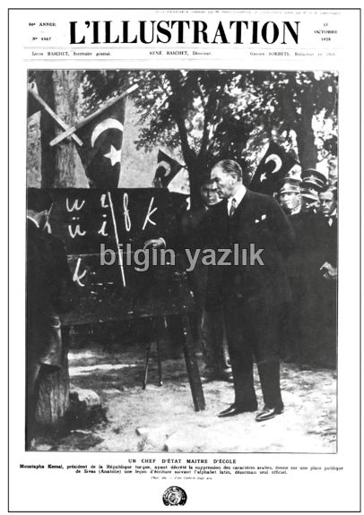
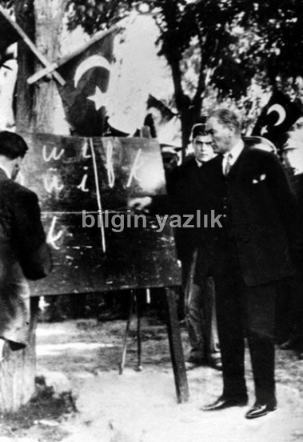
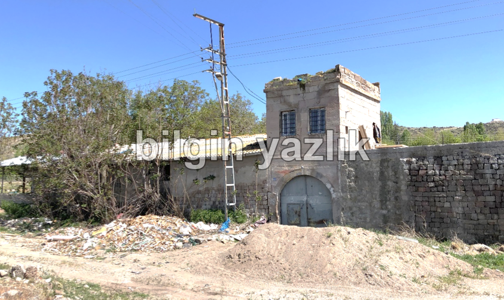
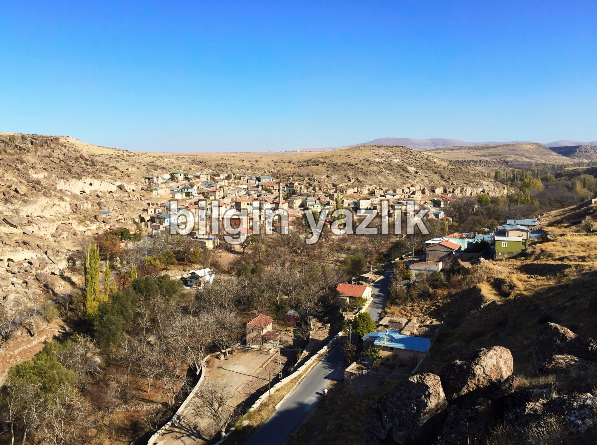

BAŞÖĞRETMEN ATATÜRK’ÜN YENİ HARFLERİ TAKDİM İÇİN KAYSERİ VE KORAMAZ VADİSİ ZİYARETİ
Kayseri, bilinen tarih boyunca burada yaşamış tüm medeniyetler için çok değerli bir şehir olmuştur. Nitekim gerek Selçuklu gerekse Osmanlı dönemi boyunca şehir, birçok açıdan bulunduğu bölgenin çekim merkezi olmuştur. Kayseri, Atatürk için de son derece önemli bir şehirdir, öyle ki ulaşımın çok kısıtlı olduğu dönemlerde Atatürk’ün Kayseri’yi kimi kaynaklara göre her ne kadar dört[1]defa denilse de beş defa ziyaret ettiği bilinmektedir[2]. Atatürk’ün Kayseri’yi dört defa ziyaret ettiğini belirten kaynaklarda 18 Kasım 1930 tarihli ziyaret dikkate alınmamıştır, hâlbuki Atatürk’ün bu ziyareti esnasında Kayseri’de çekilmiş fotoğrafları ve hatta bir de videosu bulunmaktadır[3]. Bu yazımıza konu olan ziyaret ise kronolojik olarak üçüncü sırada yer alan 20 Eylül 1928 tarihli ziyaretidir.
Harf inkılabı 1 Kasım 1928’de gerçekleşmiştir, Atatürk, inkılaptan önce Anadolu’da farklı şehirlere yeni alfabe tetkikleri de yaptığı ziyaretler gerçekleştirmiştir, bunlardan biri de inkılaptan tam 40 gün önce, yani 20 Eylül 1928 tarihinde Kayseri’ye gerçekleşmiştir.
Çeşitli kaynaklarda[4][5][6]bu ziyarette Gesi Nahiyesinde İsmet Paşa ile birlikte alfabe teftişi yaptığı anlatılmaktadır. Fakat Hüseyin Cömert, bu konuyu Koramaz Vadisi adlı kitabında biraz daha detaylandırarak şu ifadeleri kullanmaktadır: “1928 yılında Mustafa Kemal Paşa, yanında bulunan heyet ile beraber yeni yazı hakkında incelemeler yapmaya Kayseri’ye gelirken Gesi, Mancusun, Vekse, Ispıdın, Efkere köyleri halkı, öğretmen ve öğrencileri tarafından burada bulunan Han’da karşılanarak ağırlanır. Gesi Belediye Başkanı Emin Ağa, burada karşılama heyetindeki zevatın adlarını tek tek okuyarak Mustafa Kemal Paşa’ya tekmil vermiştir. Bazı kaynaklarda Mustafa Kemal Paşa’nın Gesi’de karşılandığı belirtilmekte olup yapılan yanlışlığın, Ispıdın’ın idari olarak Gesi Nahiyesine bağlı olmasından kaynaklandığını tahmin etmekteyiz.”[7]Bu açıklamalardan da görüleceği üzere Atatürk, 20 Eylül 1928 tarihindeki Kayseri ziyareti esnasında Koramaz Vadisi içerisinde yer alan Isbıdın’da bulunan ve bugün maalesef kaderine terk edilmiş halde bulunan Kayır Hanı’nda öğrenciler ile yeni harflerin tetkiki için bir araya gelmiştir.
Koramaz Vadisi, Kayseri’nin Melikgazi Belediyesi sınırları içerisinde, şehrin yaklaşık 20 km kuzey doğusunda yer alan ve bugünlerde UNESCO Dünya Mirası adaylığı için çeşitli çalışmalar yürütülen, binlerce yıllık geçmişe sahip uygarlıklara ev sahipliği yapmış, benzersiz doğal güzellikler barındıran yaklaşık 12 km uzunluğa sahip bir vadidir. Atatürk’ün 20 Eylül 1928 tarihinde Isbıdın’a gerçekleştirdiği ziyaretin bir tesadüften ibaret kabul edilmesi haksız bir yaklaşım olacaktır, bu bölgenin doğal ve kültürel mirasının, bir doğa ve kültür meraklısı olarak Atatürk’ün de ilgisini çektiğini düşünülebilir. Zira zamanında Osmanlı’da Dışişleri Bakanlığı görevini ifa etmiş, Raşit Efendi’nin Isbıdınlı olduğu, Mimar Sinan’ın Ağırnaslı olduğu ve tüm bu yerleşimlerin bir arada tek bir vadi içerisinde (Koramaz Vadisi) yer aldığı o dönemde de gayet iyi bilinmektedir. Zaten harf inkılabından önce yapılacak olan böylesi bir teftişin en iyi eğitime sahip öğrenciler ile gerçekleştirilmesi beklenir. Yüzlerce yıllık sanat ve kültür geçmişine sahip olan Koramaz Vadisi’nin bu buluşmaya ev sahipliği yapmış olması bizce tesadüften öte bilinçli bir tercihtir.
Yeri gelmişken, Atatürk’ün halk, öğretmen ve öğrenciler buluşmasına ev sahipliği yapan Kayır Hanı, bugün sanki hiç bu buluşmaya tanıklık etmemişçesine kaderine terk edilmiş halde yıkılmaya yüz tutmuştur. Hâlbuki Kayseri’de Atatürk’ün ziyaretleri büyük heyecanla karşılanmış, konakladığı İmamizade Raşit Ağa Konağı bugün Kayseri Atatürk Evi olarak müzeye dönüştürülmüştür. Kayır Hanı’nın neden unutulduğu, kaderine terk edildiği bilinmemektedir. Sivas yolu üzerinde yer alan bu hanın bugün restore edilerek eski ihtişamına kavuşturulması, ardından da bir “Eğitim Müzesi” ya da yakın olması münasebeti ile “Kültepe Müzesi” olarak değerlendirilmesi ne kadar yerinde bir adım olurdu.
Bu yazıyı bitirirken L’Illustration adlı 1843-1944 yılları arasında yayın yapmış Fransız dergisinin yaptığı bir tarihi hatayı da Kayseri adına düzeltmek istiyorum. Dergi, 13 Ekim 1928 tarihli yayınının kapağında Atatürk’ün yeni harfleri kara tahtı başında halka takdim ettiği fotoğrafı, Sivas’ta çekilmiş olarak okurlarıyla paylaşmıştır. Oysaki bu fotoğrafın yukarıda bahsettiğim 20 Eylül 1928 tarihindeki ziyareti esnasında çekildiği muhtelif kaynaklarda[8][9]yer alan bilgi ile sabittir. Atatürk bu fotoğrafta Belediye bahçesinde halk, öğrenci ve öğretmenlere “Başöğretmen” sıfatı ile yeni harfleri takdim etmektedir. Her iki resim kıyaslandığında görülecektir ki, L’Illustration dergisi, fotoğrafın orijinalini kullanmak yerine bir takım ilaveler ile farklı bir resim oluşturup basmıştır. L’Illustration baskısında fotoğrafın orijinalinde yer almayan ve arka planda yer alan bazı askerler görülebilmektedir.
Kayseri, özellikle eğitim hususunda bugün Türkiye için ifade ettiği değeri, geçmişinden almaktadır. Kayseri’nin harf inkılabına en çok sahip çıkan şehirlerin başında geldiği, önemli bir kültür merkezi olduğu bu yazımız ile bir kere daha ifade edilmiştir. Bu vesile ile başta “Başöğretmen” Atatürk olmak üzere tüm öğretmenlerimizin öğretmenler gününü kutlarım.
Resim 1:L’Illustration Dergisi’nin 13 Ekim 1928 tarihli yayınının kapağı
Resim 2:Atatürk Kayseri Belediyesi bahçesinde Baş Öğretmen olarak yeni harfleri takdim ediyor. (20 Eylül 1928)
Resim 3:Kayır Hanı, 2018
Resim 4: Önde Isbıdın, Arkada Koramaz Vadisi
Kaynaklar:
[1]http://www.atam.gov.tr/dergi/sayi-28/ataturkun-kayseriyi-ziyaretleri
[2]http://www.kayserikultur.gov.tr/TR-54959/ataturkun-kayseriye-gelisleri.html
[3]https://isteataturk.com/g/icerik/Mustafa-Kemal-Ataturk-un-Kayseri-Gezisi-18111930/701
[4]S. Burhanettin Akbaş, https://bindalli.wordpress.com/2008/11/09/ataturk-ve-kayseri/
[5]http://wowturkey.com/forum/viewtopic.php?t=75201
[6]http://www.kayseriehaber.com/seni-cok-ozledik-atam-makale,478.html
[7]Hüseyin Cömert, Koramaz Vadisi, Sayfa 171
[8]https://isteataturk.com/Kronolojik/Tarih/1928/9/20/Mustafa-Kemal-Ataturk-Kayseri-de-kara-tahta-basinda-yeni-harfleri-vatandaslara-ogretirken-20091928/1
[9]ATATÜRK, T.C. Kültür Bakanlığı Yayınları. Hazırlayan Mehmet Özel (Güzel Sanatlar Genel Müdürü), Sayfa: 125




Bu yazı taliyol arşivinden taşınmıştır. · özgün kayıt